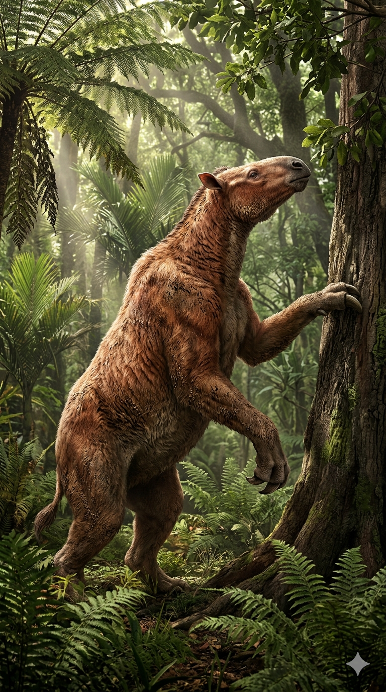
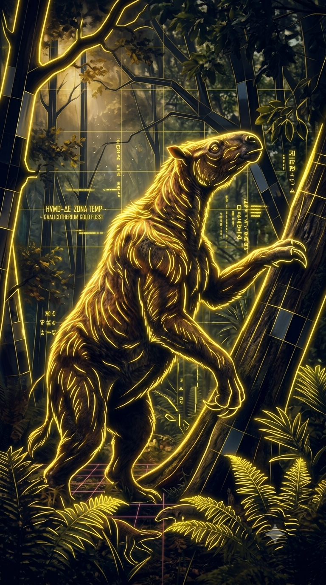

Paleoficha de Chalicotherium




Periodo: Mioceno
Edad: Hace aproximadamente entre 16 y 7 millones de años.
Dieta: Herbívoro ramoneador especializado en follaje arbóreo.
Distribución: Eurasia (desde Europa hasta el este de Asia).
TAXÓN:
Chalicotherium goldfussi
CLADO: Familia Chalicotheriidae (orden Perissodactyla)
DIETA: Herbívoro ramoneador (especialista en follaje arbóreo)
TAMAÑO: Hasta 2.6 metros a la cruz; peso estimado de hasta 1 tonelada
LOCOMOCIÓN: Cuadrúpedo con marcha nudillera en las extremidades anteriores; manos dotadas de grandes garras no retráctiles.
TIEMPO:
Mioceno, aproximadamente entre 16 y 7 millones de años.
GEOGRAFÍA:
Eurasia, desde Europa hasta el este de Asia. Ecosistemas forestales y de sabana del Mioceno con bosques densos y zonas arboladas de elevada diversidad vegetal.
ECOLOGÍA:
Bosques templados y subtropicales donde consumía hojas, brotes y frutos de altura. Compartía el ecosistema con Deinotherium, Hipparion y grandes depredadores como los anficiónidos. Su singular morfología le permitía sujetar ramas con las garras para atraer el follaje, ocupando un nicho ecológico con muy poca competencia directa.
CLIMA:
Wm6 (Estacional templado). Condiciones templadas con marcada estacionalidad de humedad.
ESTADO ECOLÓGICO:
Estable. Representa uno de los ejemplos más extraordinarios de evolución convergente entre los ungulados, desarrollando una anatomía única adaptada al ramoneo arbóreo.
Vídeo PalEntropía:
▶ Ver Short en YouTube